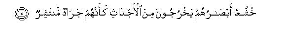
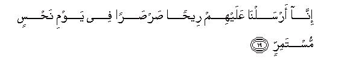
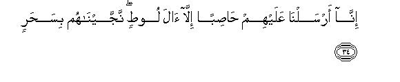
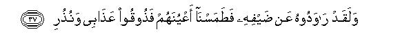
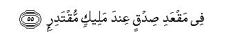

بسم الله الرحمن الرحيم
Sayyid Abul Ala Maududi - Tafhim al-Qur'an - The Meaning of the Qur'an
 54.
Surah Al Qamar (The Moon)
54.
Surah Al Qamar (The Moon)
The Surah takes its name from the very first verse Wan shaqq al-Qamar, thereby implying that it is a Surah in which the word al-Qamar has occurred.
The incident of the shaqq-al-Qamar (splitting of the moon) that has been mentioned in it, determines its period of revelation precisely. The traditionists and commentators are agreed that this incident took place at Mina in Makkah about five years before the Holy Prophet's hijrah to Madinah.
In this Surah the disbelievers of Makkah have been warned for their stubbornness which they had adopted against the invitation of the Holy Prophet (peace and blessings of Allah be upon him). The amazing and wonderful phenomenon of the splitting of the Moon was a manifest sign of the truth that the Resurrection, of which the Holy Prophet was giving them the news, could take place and that it had approached near at hand. The great sphere of the Moon had split into two distinct parts in front of their very eyes. The two parts had separated and receded so much apart from each other that to the on-lookers one part had appeared on one side of the mountain and the other on the other side of it. Then, in an instant the two had rejoined. This was a manifest proof of the truth that the system of the Universe was neither eternal nor immortal, it could be disrupted. Huge stars and Planets could split asunder, disintegrate, collide with each other, and everything that had been depicted in the Quran In connection with the description of the details of Resurrection, could happen. Not only this : it was also a portent that the disintegration of the system of the Universe had begun and the time was near when Resurrection would take place. The Holy Prophet (peace and blessings of Allah be upon him) invited the people's attention to this event only with this object in view and asked them to mark it and be a witness to it. But the disbelievers described it as a magical illusion add persisted in their denial. For this stubbornness they have been reproached in this Surah.
At the outset it has been said: "These people neither believe in the admonition, nor learn a lesson from history, nor affirm faith after witnessing manifest signs with their eyes. Now they would believe only when Resurrection has taken place and they would be rushing out of their graves towards the Summoner on that Day."
Then, the stories of the people of Noah and of 'Ad and Thamud and of the peoples of Lot and the Pharaoh have been related briefly and they have been reminded of the terrible punishments that these nations suffered when they belied and disregarded the warnings given by the Prophets of God. After the narration of each story the refrain that has been provided is : "This Qur'an is an easy means of admonition, which if a nation takes to heart and thereby takes the Right Way, the torment that descended on the former nations could be avoided. But it would indeed be a folly if instead of heeding the admonition through this easy means, one persisted in heedlessness and disbelieved until one was overtaken by the torment itself."
Likewise, after citing admonitory precedents from the history of the former nations, the disbelievers of Makkah have been addressed and warned to this effect: "If you too adopt the same attitude and conduct for which the other nations have already been punished, why will you not be punished for it?Are you in any way a superior people that you should be treated differently from others? Or, have you received a deed of amnesty that you will not be punished for the crime for which others have been punished?And if you feel elated at your great numbers, you will soon see that these very numbers of yours are put to rout (on the battlefield) and on the Day of Resurrection you will be dealt with even more severely."
In the end, the disbelievers have been told that Allah does not need to make lengthy preparations to bring about Resurrection. No sooner does He give a simple command for it than it will take place immediately. Like everything else the Universe and mankind also have a destiny. According to this destiny everything happens at its own appointed time. It cannot be so that whenever somebody gives a challenge, Resurrection is brought about in order to convince him. If you adopt rebellion because you do not see it coming, you will only be adding to your own distress and misfortune. For your record which is being prepared by Divine agents, has not left any misdeed of yours, great or small, unrecorded.

In the name of Allah, the Compassionate, the Merciful.
[1-3] The Hour of Resurrection has drawn near and the Moon has split asunder.1 Yet whatever Sign these people may see they turn away and say, "This is current magic.”2 They have denied (this too) and followed only their own lusts.3 Ultimately, every matter has to reach an appointed end.4

[4-8] There have already come to them narratives (of the former communities) containing enough deterrents to restrain them from rebellion and profound wisdom as serves the purpose of admonition well, but warnings are of little avail with these people. So, O Prophet, turn away from them.5 The Day the Caller shall call them to a most terrifying event,6 the people shall rise out of their graves7 with awestruck looks8 as though they were scattered locusts. They will be rushing towards the Caller and the same disbelievers (who denied it in the world) shall say, "This indeed is a hard day!"
[9-17] Before them the people of Noah also denied.9 They called Our servant a liar, and said, "He is a madman," and he was rebuked harshly.10 At last, he called out to his Lord, saying," I am overcome: take now Thy vengeance." Then We opened the gates of heaven with torrential rain and We caused the earth to burst forth into springs,11 and the waters met to fulfill the decreed end. And We bore Noah upon a thing made of planks and nails,12 which floated under Our care. This was a vengeance for the sake of him who had been slighted.13 And We left that Ark as a Sign.14 Then, is there any who would take admonition? Just see how dreadful was My scourge and how true My warnings! We have made this Qur'an an easy means of admonition.15 Then, is there any who would take admonition?

[18-22] 'Ad also denied. Then behold, how severe was My punishment and how true My warnings! We sent on them a raging wind on a day of continuous ill-luck,16 which swept them off as though they were trunks of uprooted palm-trees. Then see how severe was My punishment and how true My warnings! We have made this Qur'an an easy means of admonition. Then, is there any who would take admonition?


[23-32] Thamud rejected the warnings, and said, "A solitary man he is from among ourselves. Shall we now follow him?17 If we did so, we should indeed be gone astray and have committed folly. Was he the only person among us to have God's Reminder sent down to him? Nay, but he is an utter liar and a conceited person."18 (We said to Our Messenger) Tomorrow they shall know who is an utter liar and a conceited person. We are sending the she-camel as a trial for them. Now watch with patience what end they meet. Tell them that the water will be divided between them and the she-camel, and each will have water on his own Turn."19 At last, they called out to their companion, who took up the responsibility and killed her.20 Then see how severe was My punishment and how true My warnings! We let loose on them a single blast and they became as the trampled twigs of the fence of a fold builder.21 We have made this Qur'an an easy means of admonition. Then, is there any who would take admonition?


[33-40] Lot's people denied the warnings. We sent on them a wind charged with stones, which spared none but Lot's household, whom we saved in the last hours of the night through Our grace. Thus do We reward him who is grateful. Lot did warn his people of Our scourge but they doubted all the warnings and paid no heed. Then they sough to prevent him from guarding his guests. Consequently, We blinded their eyes (and said), "Taste now My torment and My warnings!"22 Early in the morning they were overtaken by a lasting torment. Taste now My torment and My warnings. We have made this Qur'an an easy means of admonition. Then, is there any who would take admonition?

[41-48] Are your disbelievers any better?23 Or, is there any exemption for you in the Divine Books? Or, do they say, "We are a strong host: We shall defend ourselves?" Soon shall this host be put to rout and they will all show their backs.24 But the promised time to deal with them is the Hour of Resurrection, a most grievous and bitter Hour! These wicked people are in fact involved in misunderstanding and folly. The Day they are dragged into the Fire, on their faces, it will be said to them, "Taste now the flame of Hell."

[49-53] We have created everything with a destiny,25 and Our Command is but one Command, which takes effect in the twinkling of an eye.26 We have destroyed many like you.27 Then, is there any who would take admonition ? Whatever they have done is recorded in registers and everything, small or great, is written therein.28

[54-55] Those who have avoided disobedience shall be among gardens and canals, in a place of true honor, in the Presence of a most Powerful King.
1That is, "The splitting of the Moon asunder is a portent that the Hour of Resurrection of which you are being foretold, has drawn near at hand, and the order of the Universe has begun to be disrupted. Moreover, the incident that a great sphere like the Moon's has split into two distinct parts, is a specific proof of the fact that Resurrection of which you are being forewarned can take place. Obviously, when the Moon can split, the earth also can split, the orbits of he stars and planets also can change and the whole system of the heavens also can be disturbed. There is nothing eternal and everlasting and stable here so that Resurrection may be improbable."
Some people have taken this sentence to mean: "The Moon will split. " Although according to Arabic usage it is possible to take this meaning, the context clearly rejects it. In the first place, if this were the meaning, the first sentence would become meaningless. If the Moon had not actually split at the time when this Revelation was made, but it was going to split some time in the future, it would be absurd to say on the basis of this that the Hour of Resurrection had approached near at hand. After all, how can an incident that is to take place in the future, be regarded as a sign of Resurrection's being near at hand, and how can such a testimony be put forward as a rational argument? Second, with this meaning in mind when we read the following verses, they appear to be altogether incoherent. The verses that follow clearly show that the people at that time had witnessed a sign that was a manifest portent of the possibility of Resurrection, but they rejected it as a magical illusion, and persisted in their belief that Resurrection was not possible. In this context, the words inshaqq-al-Qamar can be meaningful only if they are taken to mean: "The Moon split asunder." If they are taken to mean: "The Moon will split asunder," the whole following theme becomes disjointed. It will Took like this:
"The Hour of Resurrection has drawn near and the Moon will split asunder. Yet whatever sign these people may see they turn away and say: `This is current magic!' They have denied and followed only their own lusts. "
Therefore, the truth is that the incident of the splitting of the Moon is confirmed explicitly by the words of the Qur'an and it is not dependent upon the traditions of the Hadith. However, the traditions supply its details, and one comes to know when and how it had taken place. These traditions have been related by Bukhari, Muslim, Tirmidhi, Ahmad, Abu `Uwanah, Abu Da'ud Tayalisi, `Abdur Razzaq, Ibn Jarir, Baihaqi, Tabarani, Ibn Marduyah, and Abu Nu'aim Tsfahani with many chains of transmitters on the authority of Hadrat `Ali, Hadrat `Abdullah bin Mas'ud, Hadrat `Abdullah bin `Abbas, Hadrat' Abdullah bin `Umar, Hadrat Hudhaifah, Hadrat Anas bin Malik and Hadrat Jubair bin Mut`im. Three of these authorities, viz, Hadrat `Abdullah bin Mas'ud; Hadrat Hudhaifah, and Hadrat Jubair bin Mut`im, state that they were the eye-witnesses of this event; two of them cannot be its eye-witnesses, for this event took place before the birth of one (i.e. 'Abdullah bin `Abbas) and at a time when the other (i.e.. Anas bin Malik) was yet a child. But since both these scholars were Companions, obviously they must have reported this event after they had heard it from the aged Companions who had direct knowledge of it.
The information that one gathers from the various traditions is that this incident occurred about five years before the Hijrah. It was the 14th night of the lunar month; the Moon had just risen when it suddenly split and its two parts were seen on either side of the hill in front. Then after a moment or so they rejoined. The Holy Prophet (upon whom be peace) at that time was at Mina. He told the people to mark it and be witnesses to it. The disbelievers said that Muhammad (upon whom be Allah's peace and blessings) had worked magic on them; therefore, their eyes had been deceived. The other people said: "Mnhammad could have worked magic on us but not on all the people. Let the people from other places come: we shall ask them if they also had witnessed this incident. " When the people from other places came, they bore evidence that they also had witnessed the same phenomenon.
Some traditions which have been related from Hadrat Anas give rise to the misunderstanding that the incident of the splitting of the Moon had happened twice. But, in the first place, no one else from among the Companions has stated this; second, in some traditions of Hadrat Anas himself also the words are marratain (twice), and in sane firqatain and shaqqatain (two pieces); third, the Qur'an mentions only one incident of the Moon's splitting asunder. The correct view therefore is that this incident happened only once. As for the stories which are current among the people that the Holy Prophet (upon whom be peace) had matte a gesture towards the Moon and it split into two parts and that one part of the Moon entered the breast of the garment of the Holy Prophet and went out of the sleeve, have no basis whatever.
Here, the question arises: What was the real nature of this incident. Was it a miracle that the Holy Prophet (upon whom be peace) performed on the demand of the disbelievers of Makkah as a proof of his Prophethood? Or, was it only an accident that occurred on the Moon by the power of Allah and the Holy Prophet had only called the peoples attention to it and warned them to mark it as a Sign of the possibility and nearness of Resurrection? A large group of the Muslim scholars regards it as among the miracles of the Holy Prophet and holds the view that it had been shown on the demand of the disbelievers. But this view is based only on somc of those traditions which have been related from Hadrat Anas. Apart from him no other Companion has stated this. According to Fath al Bari Ibn Hajar says: "Apart from the narration by Hadrat Anas, in no other narration of this story have I come across the theme that the incident of the splitting of the Moon had taken place on the demand of the polytheists. (Bab Inshiqaq al-Qamar). Abu Nu'aim Isfahani has related a tradition on this subject in Dale il an-Nubuwwat, on the authority of Hadrat 'Abdullah bin 'Abbas also, but it has a weak chain of transrmitters and none of the traditions that have been related with strong chains of tranamitters in the collections of Hadith on the authority of Hadrat 'Abdullah bin 'Abbas, contains any mention of this. Furthermore, neither Hadrat Anas nor Hadrat `Abdullah bin `Abbas was a contemporary of this incident. On the contrary, none of the Companions from among Hadrat `Abdullah bin Mas'ud, Hadrat Hudhaifah, Hadrat Jubair bin Mut`im, Hadrat 'Ali, Hadrat `Abdullah bin 'Umar, who were contemporaries of the incident, has stated that the pagans of Makkah had demanded a Sign of the Holy Prophet to testify to his Prophethood on which he might havc shown the miracle of the splitting of the Moon. Above all, the Qur'an itself also is presenting this event not as a Sign of the Prophethood but as a Sign of the nearness of Resurrection. However, this was indeed conspicuous proof of the Holy Prophet's truthfulness because it testified to the news that he was giving to the people of the coming of Resurrection.
The critics raise two kinds of objections against it. In the first place, they say it is impossible that a great sphere like the Moon should split asunder into two distinct parts, which should get hundreds of miles apart and then rejoin. Secondly, they say if it had so happened, it would be a well-known event in the world and would have found mention in the books of History and Astronomy. But, in fact, both these objections are flimsy. As for the discussion of its possibility, it could perhaps find credibility in the ancient days but on the basis of what man has cane to know in the present day about the structure of the planets, it can be said that it is just possible that a sphere may burst because of its internal volcanic action and its two parts may be thrown far apart by the mighty eruption, and then may rejoin under the magnetic force of their center. As for the second objection, it is flimsy because the event had taken place suddenly and lasted a short time only. It was not necessary that at that particular moment the world might be looking at the Moon. There was no explosion either that might have attracted the people's attention; there was no advance information of it that the people might be awaiting its occurrence and looking up at the sky. It could not also be seen everywhere on the earth but only in Arabia and the eastern (ands where the Moon had risen and was visible at that time. The taste and art of writing history also had not yet developed so that the people who might have witnessed it, should have made a record of it and then sane historian might have gathered the evidence and preserved it in some book of History. However, in the Histories of Malabar mention has been made of a native ruler who had witnessed this phenomenon that night. As for the books of Astronomy and Calendars, this event might have been mentioned in them only if the event had affected the movement of the Moon, its orbit and the times of its rising and setting. As no such thing happened, it did not attract the ancient astronomers' attention. The observatories also were not so developed that they might have taken notice of everything happening in the heavens and preserved a record of it.
2The words sihr-um mustamirr of the Text can have several meanings:
(1) That, God forbid, this magical illusion also is one of those magical performances that Muhammad (upon whom be Allah's peace and blessings) has been performing day and night;
(2) that this certainly is a work of magic which has been performed with great expertise; and
(3) that just as other works of magic have passed, so will this also pass without leaving any lasting effect behind.
3That is, "They still persisted in the same decision that they had made of denying the Hereafter and have not changed their mind even after having witnessed this manifest Sign, mainly because it clashed with their desires of the flesh. "
4That is, "It cannot be so endlessly that Muhammad (upon whom be Allah's peace and blessings) should go on inviting you to the Truth while you persist in your falsehood stubbornly and his Truth and your falsehood should never be established. All affairs ultimately have to reach an appointed end. Likewise, inevitably this conflict between you and Muhammad (upon whom be Allah's peace and blessings) has also to reach an end. A time will certainly come when it will be clearly established that he had been in the right and you in the wrong throughout. Likewise, the worshipers of the Truth shall one day see the result of their worshiping the Truth and the worshipers of falsehood of their worshiping the falsehood."
5In other words, Leave them to themselves. When every effort has been made to make them understand the Truth in the most rational ways, when instances have been cited from history to show them the evil results of the denial of the Hereafter, when the dreadful fates suffered by the other nations in consequence of their rejecting the Prophetic messages have been brought to their notice and yet they are disinclined to give up their stubbornness, they should be left alone to gloat over their follies. Now, they would believe only when after death they arise from their graves to see with their own eyes that the Resurrection of which they were being forewarned and exhorted to adopt the truth, had actually Taken place
6Another meaning can be "an unknown thing", a thing which they never could imagine, of which they never had any concept and no idea whatever that it also could occur.
7"Graves" do not signify only those pits in the earth in which a person might have been properly buried, but he would rise up from wherever he had died, or from wherever his dust lay, on the call of the Caller to the plain of Resurrection.
8Literally: "Their looks will be downcast. "This can have several meanings:
(1) That they will appear tenor-stricken;
(2) that they will be reflecting disgrace and humiliation, for as soon as they arise out of their graves they would realize that it was indeed the same second life which they had been denying, for which they had made no preparation, and in which they would have to present themselves before their God as culprits; and
(3) that with awe-struck looks they would be watching the dreadful scenes before them, from which they would not be able to avert their eyes.
9That is, `They denied that the Hereafter has to take place when man will have to render an account of his deeds; they denied the Prophethood of the Prophet who was making his people aware of this truth; and they denied the teaching of the Prophet, which taught them what to believe and what creed and conduct they should adopt in order to pass the reckoning of the Hereafter."
10That is, "The people not only belied the Prophet but also branded him as a madman; they uttered threats against him, showered him with curses and abuses; and did whatever possibly they could to stop him from preaching the truth, and thus made life extremely difficult for him.
11That is, the earth so burst forth with springs at the Command of Allah that it was no longer earth but presented a scene of the springs all around.
12This signifies the Ark which the Prophet Noah had built under Allah's care and guidance even before the coming of the Flood.
13Literally: "This was a vengeance for the sake of him whose kufr had been committed." If kufr be taken in the sense of denial, it would mean: "Whose message had been denied and rejected; " and if it is taken in the meaning of ingratitude for a blessing, it would mean: 'Who was indeed a blessing for the people, but had been ungratefully rejected.'
14It may also mean: `We left this dreadful punishment as a sign of warning," but in our opinion the preferable meaning is that the Ark was left as a sign of warning. Its resting and existence on a high mountain continued to warn the later generations of the wrath of God for thousand of years and kept on reminding them how the people who had disobeyed God on this earth had met their down, and how the believers had been rescued from it. Imam Bukhari, Ibn Abi Hatim, 'Abdur Razzaq and Ibn Jarir have related traditions on the authority of Qatadah saying that at the time the Muslims conquered 'Iraq and al-Jazirah, this Ark still existed on Mount Judi (and according to a tradition, near the settlement of Baqirda), and the early Muslims had seen it. In the modern times also some people during their flights in the airplanes have sighted an Ark-like object on a peak in this region, which is suspected to be the Ark of Noah, and on the basis of the same expeditions have been sent from time to time to search it out. (For further details, see E.N. 47 of AI-A'raf, E.N. 46 of Hud, and E.N. 25 of AI-Ankabut ).
15Some people have misconstrued the words Yassarnal-Qur an to mean that the Qur'an is an easy Book; no knowledge is required to understand it so much so that a person even without the knowledge of the Arabic language, can write a commentary on it, and can deduce any injunctions he likes from its verses independent of the Hadith and Islamic Law, whereas the context in which these words occur, indicates that they are meant to make the people realize this: "One means of the admonition are the dreadful torments that descended upon the rebellious nations, and the other means is this Qur'an, which guides you to the right path by argument and instruction. Obviously, this means of admonition is by far the easier one; then, why don't you take advantage of it and insist on meeting with the torment instead? It is indeed Allah's bounty that He has sent this Book through His Prophet and is warning you that the ways you are following lead only to destruction and your well-being lies only in following this way. This method of admonition has been adopted so that you are rescued even before you fall into the pit of destruction. Now, who could be more foolish than the one who does not believe in the admonition and realizes his error only after he has fallen into the pit?"
16That is, on a day the ill luck of which continued to rage for several days. In Surah Ha Mim As-Sajdah: 16, the words are: fi ayyam in nahisat: "in a few ill-omened days," and in Surah AI-Haqqah: 7, it has been said: "This wind storm continued to rage for seven nights and eight days. "It is said that the day on which the storm started was Wednesday. From this the idea spread that Wednesday was a day of ill-luck, and no work should be started on this day. Some very weak traditions also have been cited to support this view, which have further strengthened the idea that this day is ill-omened. For example, there is Ibn Marduyah and Khatib al-Baghdadi's tradition that the last Wednesday of the month is ill-omened, the ill-omen of which is endless. Ibn Jauzi regards this tradition as fabricated and Ibn Rajab as unauthentic Hafiz Sakhavi; says that all the methods through which this tradition has been reported, are weak. Likewise, Tabarani's tradition ("Wednesday is a day of perpetual ill-luck") also has been declared as weak by the scholars of Hadith. In some other traditions one is also forbidden to start a journey, to do business transactions, to pare the nails, or to visit the sick on a Wednesday. They also say that leprosy starts on this day. But all these traditions are weak and these cannot be made the basis of any belief. The scholar Munawi says: 'To abandon Wednesday taking it as ill-omened and to entertain the astrologer's whims in this regard is forbidden, strictly forbidden, for all days belong to Allah; no day is beneficial by itself nor harmful." 'Allama Alusi says: 'All days are equal; Wednesday has no peculiarity about it. There is no hour in the night or day which might be good for one person and bad for another. It is Allah Who creates favorable conditions for some people and adverse for others.
17In other words, there were three reasons for their refusal to obey and follow the Prophet Salih:
(1) "He is a human being and not a super-human person so that we may regard him as superior to ourselves."
(2) "He is a member of our own nation: he is in no way superior to us."
(3) `He is a single man, one from among ourselves. He is not a prominent chief with a large following, or an army of soldiers. Or a host of attendants so that we may acknowledge his superiority." They wanted that a Prophet should either be a superman, or if he be a common man, he should not have been born in their own land and nation, but should have descended from above, or sent from another land, and if nothing else, he should at least have been a rich man, whose extraordinary splendor should make the people believe why Allah had selected him alone for the leadership of the nation. This same was the error of ignorance in which the disbelievers of Makkah were involved. They also refused to acknowledge the Prophet Muhammad (Upon Whom be Allah's peace and blessings) as a Prophet on the ground that he was a man who moved about in the streets like the common men, had been born among them only . the other day and now was claiming that God had appointed him as a Prophet.
18The word ashir of the original means a conceited, insolent person given to bragging of his own superiority over others.
19This explains the verse: "We are sending the she-camel as a trial for them." The trial was that suddenly a she-camel was produced before them and they were told that one day she would drink the water all by herself and the next. day they would be allowed to have water for themselves and their cattle. On the day of her turn neither would any of them himself come to any of the springs and wells to take water nor bring his cattle for watering. This challenge was given on behalf of the person about whom they themselves admitted that he had no army and no hosts to support him.
20These words by themselves indicate that the she-camel roamed at will in their settlements for along period of time. No one could dare approach a source of water on the day of her turn. At last, they called out to a haughty chief of theirs who was well known for his courage and boldness, and urged him to put an end to her Emboldened by the false encouragement he took up the responsibility and killed the she-camel. This clearly means that the people were very frightened. They felt that she had extraordinary power, and so they dared not touch her with an evil intention. That is why the killing of a mere she-camel especially when the Prophet who had presented her, did not possess any army that could be a deterrent for them. amounted to undertaking a dangerous and difficult task. (For further details. see E.N 58 of Surah AI-A'raf and E.N.'s 104. 105 of Surah AshShua'ra' ).
21The crushed and rotten bodies of the people of Thamud have been compared to the trampled and trodden twigs and pieces of bush lying around an enclosure for cattle.
22The details of this story have been given in Surah Hud: 77-83 and Surah AI-Hijr: 61-74 above, a resume of which is as follows:
When Allah decided to punish those people with a torment, He sent a few angels in the guise of handsome boys as guests in the house of the Prophet Lot. When the people saw such handsome guests in Lot's house they rushed to it and demanded that they be handed over to them for tile gratification of their lust. The Prophet Lot implored them to desist from their evil intention, but they did not listen and tried to enter his house to take hold of the guests forcibly. At this stage suddenly their eyes were blinded. Then the angels told Lot that he and his Household should leave the city before dawn; then as soon as they had left a dreadful torment descended on the people. In the Bible also this event has been described. The words are: 'And they pressed sore upon the man, even Lot, and came near to break the door. But the men (i.e. the angels) put forth their Hand and pulled Lot into the house to them, and shut to the door. And they smote the nun that were at the door of the house with blindness, both small and great: so that they wearied themselves to find the door." (Gen., 19: 9-11), "
23The address here is directed to the Quraish, as if to say; "When the other nation have been punished for adopting disbelief and showing stubbornness and denying the Truth, why would you not be punished if you adopted the same attitude and conduct ? For you are not a special people in any way."
24This is a specific prophecy that was made five years before the hijrah, saying that the hosts of the Quraish who waxed proud of their strength would soon be put to rout by the Muslims. At that time no one could imagine how such a revolution would take place in the near future. Such was the helplessness of the Muslims that a group of them had already left the country and taken refuge in Habash and the rest of the believers lay besieged in Shi'b Abi Talib, and were being starved by the Quraish boycott and siege. Under such conditions no one could imagine that within only the next seven years the tables were going to turn. The pupil of Hadrat 'Ahdullah bin 'Abbas, has related that Hadrat 'Umar used to say : "When this verse of Surah Al-Qamar was sent down. I wondered what hosts it is that would be routed. But when in the Battle of Badr the pagan Quraish were routed and they were fleeing from the battlefield, I saw the Messenger of Allah in his armor rushing forward and reciting this verse: Sa-yuhzam-al -jam'u yuwallun-ad-dubur Then only did I realize that this was the defeat that had been foretold." (Ibn Jarir, Ibn Abi Hatim).
25That is, 'Nothing in the world has been created at random but with a purpose and destiny. A thing comes into being at an appointed time, takes a particular form and shape, develops to its fullest extent, survives for a certain period, and then decays and dies at an appointed time. Even according to this universal principle this world too has a destiny in accordance with which it is functioning till an appointed time and will come to an end at an appointed tune. It will neither come to an end a moment earlier than its appointed time of end nor survive a moment longer; it has neither existed since eternity nor will exist rill eternity, nor is it the plaything of a child which he may destroy as and when he likes."
26That is, 'We shall not have to make any lengthy preparations for bringing about Resurrection, nor will it take long to come. For no sooner will a Command be issued forth from Us than it will take place in the twinkling of an eve."
27That is, 'If you think that the world is not the Kingdom of a Wise and .lust God but the lawless empire of a blind ruler, in which man may behave and conduct himself as he likes, without any fear of accountability, history is proof and an eye-opener for you, which shows that the nations that adopted such a way of life, have been sent to their doom, one after the other."
28That is, “These people should not be under the delusion that whatever they did in the world has become extinct; nay, they should know that full record of the deeds of every person, every group and every nation, lies preserved and it will be presented before them at the appropriate time."